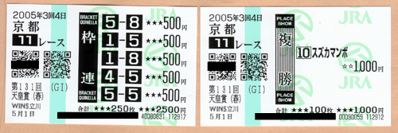

マンボ「今日こそオレが一番になってやる！」
約一年前、マンボ(2)の絵でネタとして取り上げたスズカマンボという馬を覚えていますでしょうか？（誰も覚えていないって） その馬がなんと先週（５月１日）の天皇賞で優勝してしまいました。天皇賞といえば日本の馬の頂点を決める大レース！ 本当に驚きました。
それに合わせて（ネタがあればすぐ飛びつく性格^^;）、かっこいいマンボくんをマンボ(3)の絵に続いて再び描いてみました。こうかっこいい姿ばかり描いていると、そもそものキャラの性格を忘れてしまいそうです(笑)。それにしても手足の短い妖精体型なので、馬にまたがるポーズを描くのはとても大変。。この乗り方だとマンボくんはすぐに馬から振り落とされてしまいそうです。

今回は記念に私も馬券を買ってみたのですが、まさか当たるとは夢にも思っていませんでした。枠連５－８が51.5倍、複勝（３着まで入れば当たり）が8.9倍でしたので、結果３万円くらいもうかりました（単にこれを自慢したかっただけ！？）。うーん、一年分の運を使い切ってしまった感じがする(^^;。
(2005/5/3)